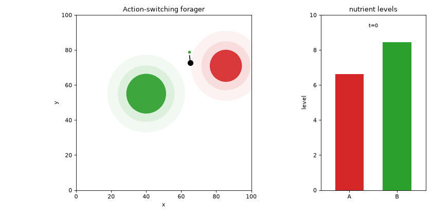
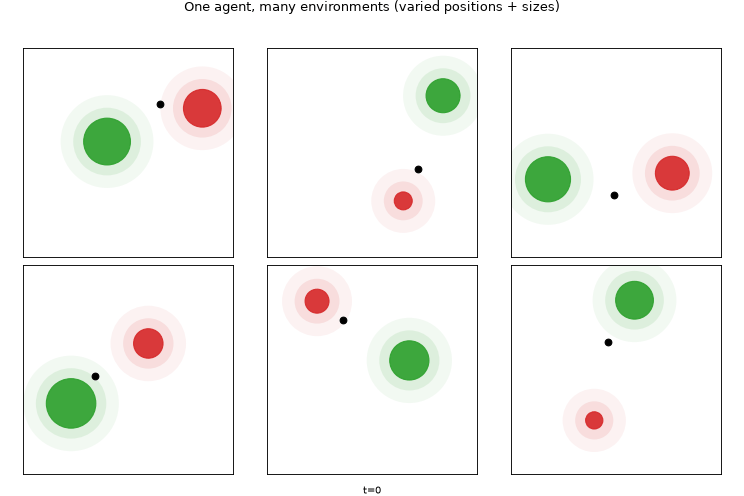
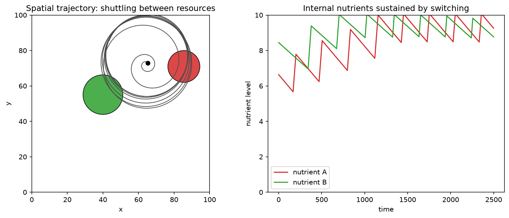
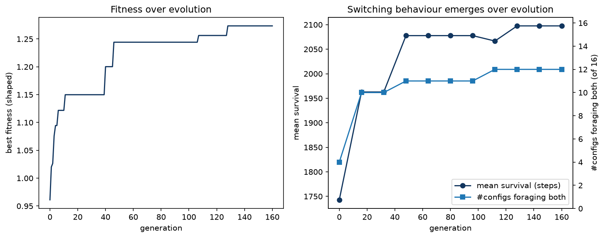
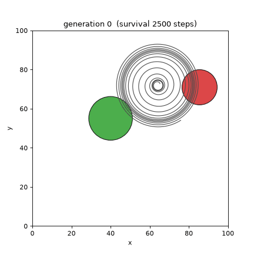
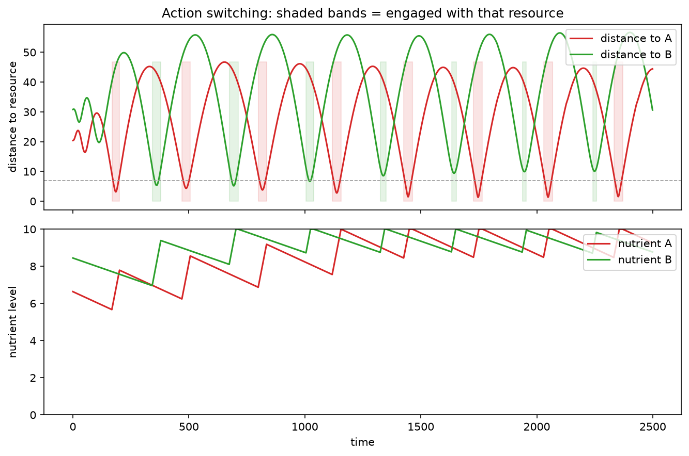
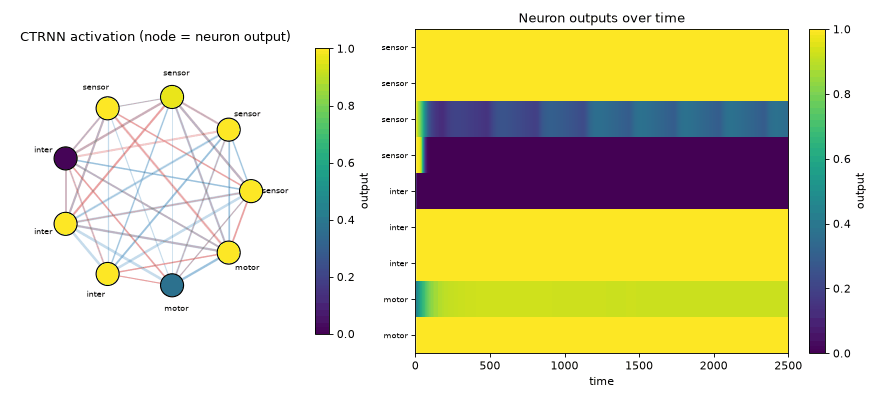
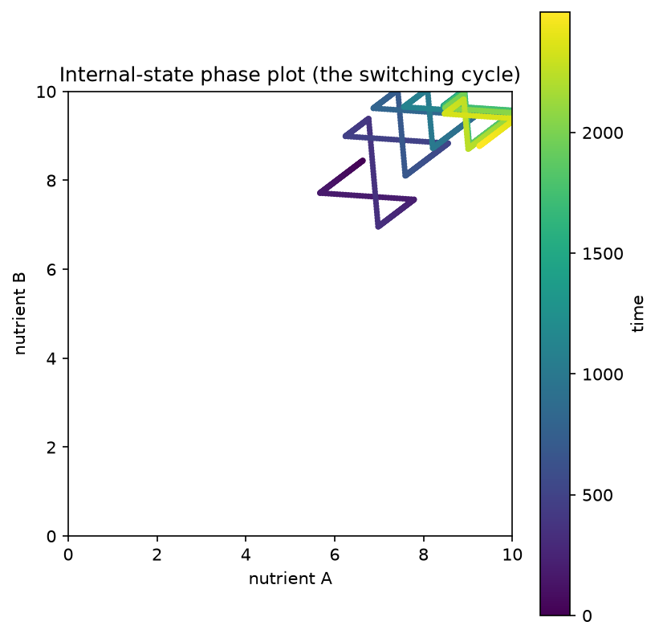
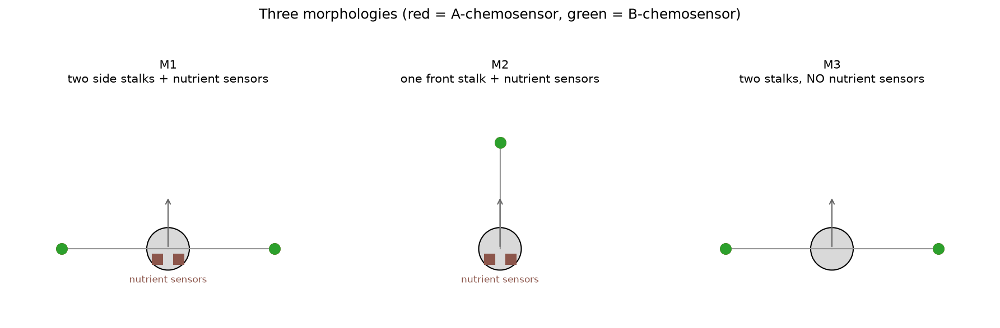

action-switching — figure gallery
10 figures across 3 studies. Use the list on the left to jump to any study; each figure has its own ↓ download.
Forage Both & Outlive a Non-Mover
as-forage-and-survival










The Dynamical Signature of Switching
as-switching-dynamics







Three Morphologies' Sensing
as-morphology-comparison

